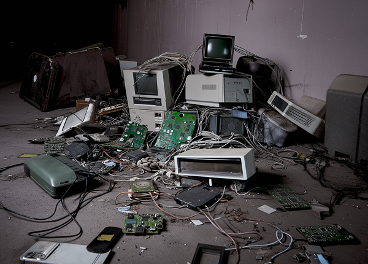
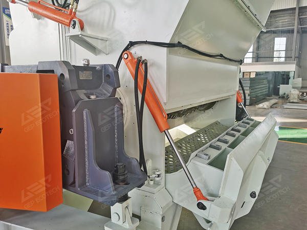
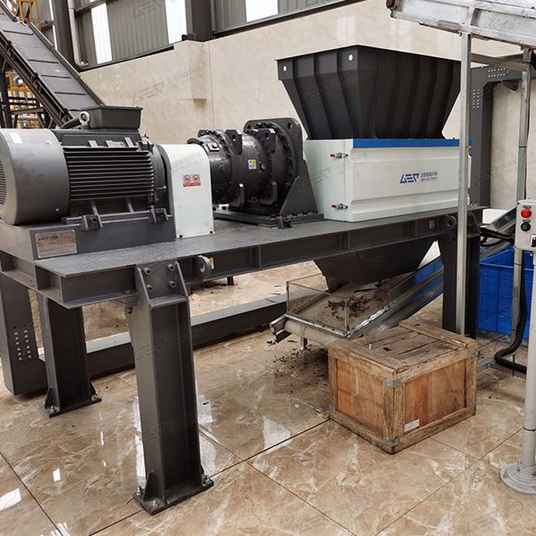
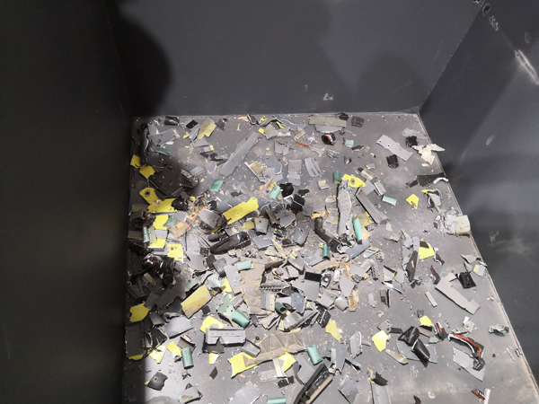
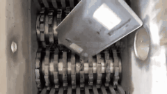

Published on March 14, 2025
As the number of electronic products continues to grow, the amount of e-waste generated after their disposal is also increasing. It is estimated that global e-waste production will exceed 74 million tons in 2025 alone. These wastes contain large amounts of hazardous substances as well as valuable metals and materials. If not handled properly, they can cause severe environmental pollution and lead to a significant waste of resources. Therefore, how to efficiently and environmentally handle these e-wastes has become an urgent issue.

Equipment Introduction
Single-shaft shredders are known for their high speed, strong production capacity, and high output. They excel in handling relatively homogeneous or larger-volume materials such as plastics, rubber, and wood. The fast rotational speed of single-shaft shredders allows them to quickly cut and shred materials, enabling a highly efficient production process. This is particularly important when large quantities of specific types of waste need to be processed. With their continuous feeding and discharging design, along with a forced material-feeding function, single-shaft shredders can process more material within a unit of time, improving overall work efficiency and output.

However, in the field of e-waste processing, especially when dealing with complex components and harder materials like iron, its application may face certain limitations. This is where our dual-shaft e-waste shredder comes into play.
Among various processing methods, using shredders to pre-crush waste circuit boards and other e-waste is an effective approach. Particularly for materials containing hard metals such as iron and other complex raw materials, dual-shaft shredders demonstrate significant advantages due to their unique design.

Dual-shaft shredders are characterized by low speed and high torque, which enables them to effectively crush harder materials while ensuring stable and efficient processing. The equipment is robust and durable, with blades made from high-strength alloy steel that undergo special treatment to achieve high wear resistance and toughness. This ensures long-lasting cutting performance. Additionally, its intelligent control system can automatically adjust operating parameters based on different materials, ensuring optimal processing results.
Due to the high speed and efficiency of dual-shaft shredders, they can significantly reduce the volume of e-waste, making storage and transportation easier. Next, at waste processing stations, we can further separate valuable components through a series of fine processing steps such as air separation, screening, and electrostatic separation, achieving maximum resource recovery.

To better address the various challenges in e-waste processing, it is advisable to combine single-shaft shredders with dual-shaft shredders. First, use the single-shaft shredder to handle the easier-to-crush and larger-volume parts, then employ the dual-shaft shredder to deal with the harder or more complex components. This approach not only leverages the strengths of both machines but also significantly improves the overall processing capacity and resource recovery rate of the production line.

Furthermore, combining subsequent fine processing steps such as air separation, screening, and electrostatic separation can more effectively separate and recover valuable metals and other reusable materials, contributing more to environmental protection and resource conservation. Through this method, we can not only effectively solve the environmental problems caused by e-waste but also extract new economic value from it. https://www.gephb.com/news/videos/e-waste-shredding.html